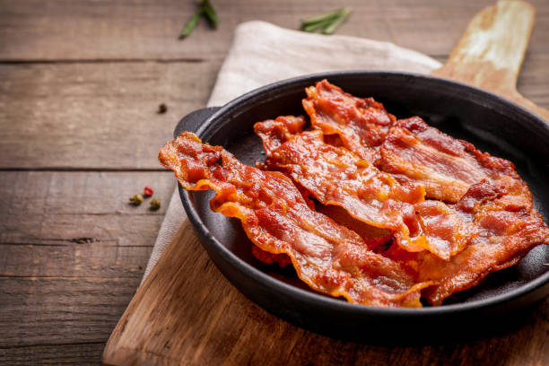
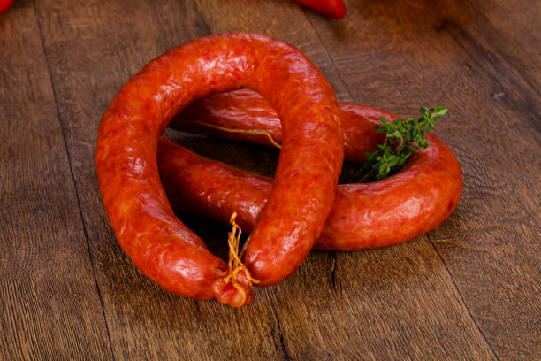

The Best Cured Meats
The most heartwarming protein and fat success stories
Prociutto Crudo
Prociutto was never cooked as a child, and had a hard time connecting with other meats, whether cooked or uncooked. The ham resented its parents for many years, but after about six months in a popular treatment known as dry-curing therapy, prosciutto crudo has learned to forgive and now gladly lends itself to be sliced delicately thin.
Bacon
A favorite in America, bacon had abnormally high salt levels. After working hard to rinse off well, maintain a good diet, and soaking up some feel-good smoke, most professionals would put bacon's salt content in the "ideal" range. You'll find that it is perfect for crisping up in the oven or in a skillet, and that its sodium will make your heart sing.
Salami
After being ground up into small pieces, salami had severe PTSD, and a mild case of multiple personality disorder. Fermentation therapy, as well as dry-curing sessions similar to what prosciutto underwent, helped pull the bits of the mentally fragmented pork and beef back together.
Smoked Kielbasa
This Polish sausage suffered from extreme lethargy, which was found to be caused by a bad bout of scurvy. After being diagnosed, it went through several rounds of smoking. Today this kielbasa can be spotted out and about, maintaining a lively friendship with sauerkraut, with scurvy far in the rearview mirror.